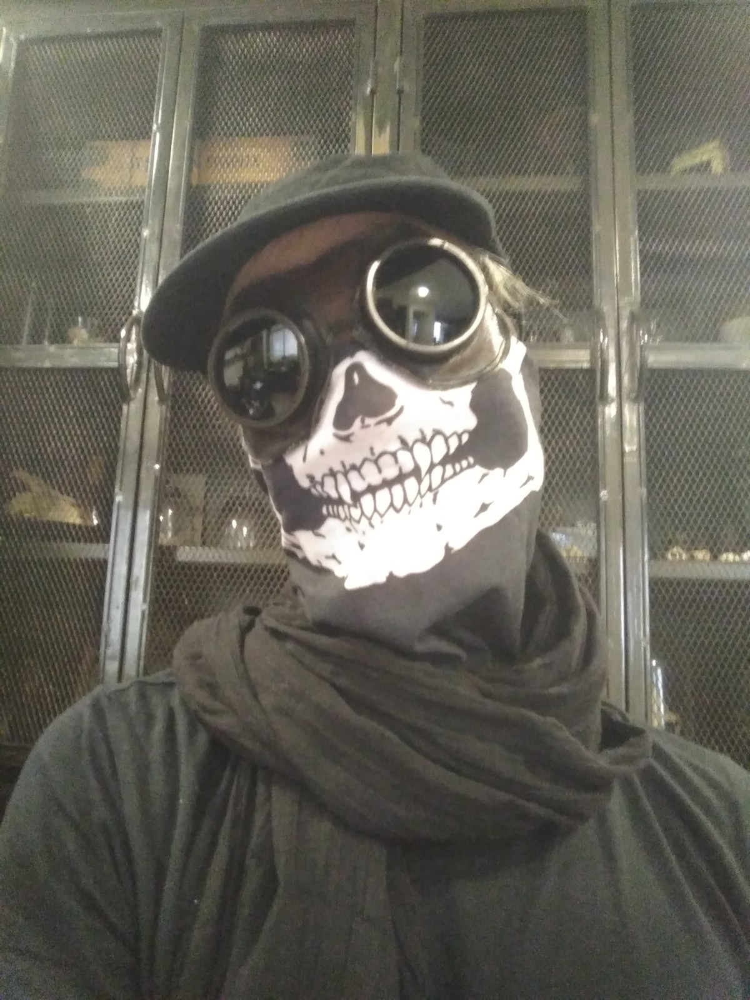

Como membro fundador da Asso Hic Et Nunc, General Vileam é um "habitué" dos circuitos europeus do dark alternativo e agora passa a maior parte do seu tempo em Portugal. Foi durante uma sessão de mistura na ilha da Madeira que descobriu num artigo de jornal que este nome artístico lhe tinha sido dado. Decidiu então ficar com ele.
As suas referências musicais são muitas vezes diferentes das do panorama português, pelo que espalha o seu amor pela música alternativa enquanto continua a enriquecer o seu catálogo passado e presente através de partilhas com os seus novos amigos.
E embora goste muitas vezes de usar máscaras perturbadoras, não é menos simpático: não hesite em perguntar-lhe qual a banda que está a tocar, ele terá todo o gosto em abrir as portas do seu universo musical : Cold, Minimal, Synthpunk, Goth, Postpunk, French Underground, Witch House...
Sim. Todos os dias são Halloween. Até debaixo do sol!